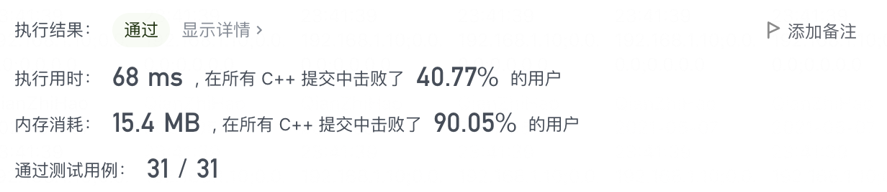
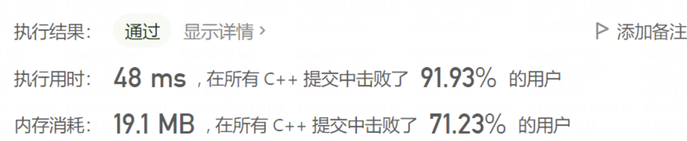

最近刷到 LeetCode 的 187 题，重复的 DNA 序列，觉得有点意思，记录一下解题过程～
# 1. 题目
所有 DNA 都由一系列缩写为 'A' ， 'C' ， 'G' 和 'T' 的核苷酸组成，例如： "ACGAATTCCG" 。在研究 DNA 时，识别 DNA 中的重复序列有时会对研究非常有帮助。
编写一个函数来找出所有目标子串，目标子串的长度为 10，且在 DNA 字符串 s 中出现次数超过一次。
- 示例：
输入：s = "AAAAACCCCCAAAAACCCCCCAAAAAGGGTTT"
输出：["AAAAACCCCC","CCCCCAAAAA"]
# 2. 思路
# i. 对比首字母相同位置
一开始我想着节省效率，然后也不清楚计算 string 的 hash 会不会比较消耗性能，于是想着只记录 4 中字母的位置，按位置用 string 的 compare 函数对比相同首字符后长度为 10 的串，若和之前某个位置的字符串比对上了，则加入结果中。形成代码大致如下：
#define SEQ_SIZE 10 | |
public: | |
vector<string> findRepeatedDnaSequences(string s) | |
{ | |
vector<string> vecResult; | |
if (s.size() <= SEQ_SIZE) | |
{ | |
return vecResult; | |
} | |
unordered_map<char, vector<int>> mapChar2Poses; | |
set<string> result; | |
for (int pos = 0; pos <= s.size() - SEQ_SIZE; pos++) | |
{ | |
bool bFound = false; | |
vector<int>& vecPoses = mapChar2Poses[s[pos]]; | |
for (auto prePos : vecPoses) | |
{ | |
if (s.compare(prePos, SEQ_SIZE, s, pos, SEQ_SIZE) == 0) | |
{ | |
result.emplace(s.substr(prePos, SEQ_SIZE)); | |
bFound = true; | |
break; | |
} | |
} | |
if (bFound == false) | |
{ | |
vecPoses.emplace_back(pos); | |
} | |
} | |
for (auto& str : result) | |
{ | |
vecResult.emplace_back(str); | |
} | |
return vecResult; | |
} |
结果发现这种方式的效率很低，有个非常长输入的用例会超时，量大了以后字符串比较的效率还是非常差的。
# ii. 计算 hash
上一种直接比较字符串的方法失败后，想着利用 hash，因为题目比较的次数比我想象的多很多，计算 hash 应该能弥补回计算的损耗。然后由于这个题目的特殊性，给的字符串中只有 4 个字母，于是我利用四进制的算法去计算 hash，于是形成代码如下：
#define SEQ_SIZE 10 | |
public: | |
vector<string> findRepeatedDnaSequences(string s) | |
{ | |
vector<string> vecResult; | |
if (s.size() <= SEQ_SIZE) | |
{ | |
return vecResult; | |
} | |
unordered_map<int, int> mapHash2Count; | |
for (int index = 0; index <= s.size() - SEQ_SIZE; index++) | |
{ | |
mapHash2Count[hash(s.substr(index, SEQ_SIZE))]++; | |
} | |
for (auto& pair : mapHash2Count) | |
{ | |
if (pair.second > 1) | |
{ | |
vecResult.emplace_back(rehash(pair.first)); | |
} | |
} | |
return vecResult; | |
} | |
int hash(string str) | |
{ | |
static unordered_map<char, int> table = <!--swig0-->; | |
int result = 0; | |
int index = 0; | |
for (auto c : str) | |
{ | |
// 每一位对应 table [c] * 4 ^ index | |
result += table[c] * (1 << (2 * index)); | |
index++; | |
} | |
return result; | |
} | |
string rehash(int hashCode) | |
{ | |
static unordered_map<int, char> table = <!--swig1-->; | |
stringstream result; | |
while (hashCode != 0) | |
{ | |
result << table[hashCode % 4]; | |
hashCode = hashCode >> 2; | |
} | |
result.seekg(0, ios::end); | |
int size = result.tellg(); | |
for (; size < 10; size++) | |
{ | |
result << table[0]; | |
} | |
return result.str(); | |
} |
最终也算是过了，不过时间效率一般般：

还欠缺一些优化技巧。
# 3. 参考答案
最终找了一份优秀答案，c++ 毛毛虫（滑动窗口）+ 哈希去重:
class Solution { | |
public: | |
vector<string> findRepeatedDnaSequences(string s) { | |
unordered_set<string> once; | |
unordered_set<string> second; | |
int size = s.size(); | |
vector<string> res; | |
if (size <= 10) return res; | |
string temp = s.substr(0, 10); | |
once.insert(temp); | |
for (int i = 10; i < size; ++i){ | |
temp.erase(0, 1); | |
temp += s[i]; | |
if (once.count(temp)){ | |
second.insert(temp); | |
}else{ | |
once.insert(temp); | |
} | |
} | |
vector<string> realResult(second.begin(), second.end()); | |
return realResult; | |
} | |
}; |
效率：

和我的思路很像不过主要有两点区别：
- 使用了滑动窗口，不需要每次取子串
- 直接使用 stl 的 unordered_set 比较
- 结果保存在两个 set 中，占用的空间比我的多一点
然后我使用了滑动窗口，效率虽然有所提升但是还是不如这个答案，看来自己实现的 hash 挺难有 stl 实现的好 o (╥﹏╥) o
# 4. 总结
主要学到三点：
- 字符串直接比较省去的计算 hash 的效率，还是没有转成 hash 直接比较来的效率高
- 固定每次检查长度的遍历使用滑动窗口可以提高一定效率
- stl 的实现的效率通常还是非常高的，很多时候不需要自己去实现